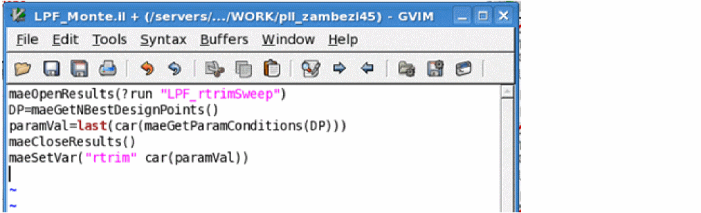

maeOpenResults
maeOpenResults( [?sessiont_sessionName] [?historyt_historyName] [?runt_runName] ) => t / nil
Description
Opens the result for the given history or run plan, and sets the result pointer to be used by other functions.
Arguments
Value Returned
|
The result for the given history or run plan is opened, and the result pointer is set to be used by other functions. |
||
Examples
Opens the result for the history Interactive.1.
; Load the results for a history
maeOpenResults(?history "Interactive.1")
=> t
>
; Get the ouput value
maeGetOutputValue("outputA" "solutions:amptest:1")
=> 2.2
;close the results
maeCloseResults()
=> t
Opens the result for a run plan.
If you are opening the results saved for a run plan, it is important to specify the name of a child history,
Plan.0.Run.0, instead of the parent history, Plan.0.maeOpenResults(?history "Plan.0.Run.0")
Loads the results of a run in the pre-run script of another run.

Return to top